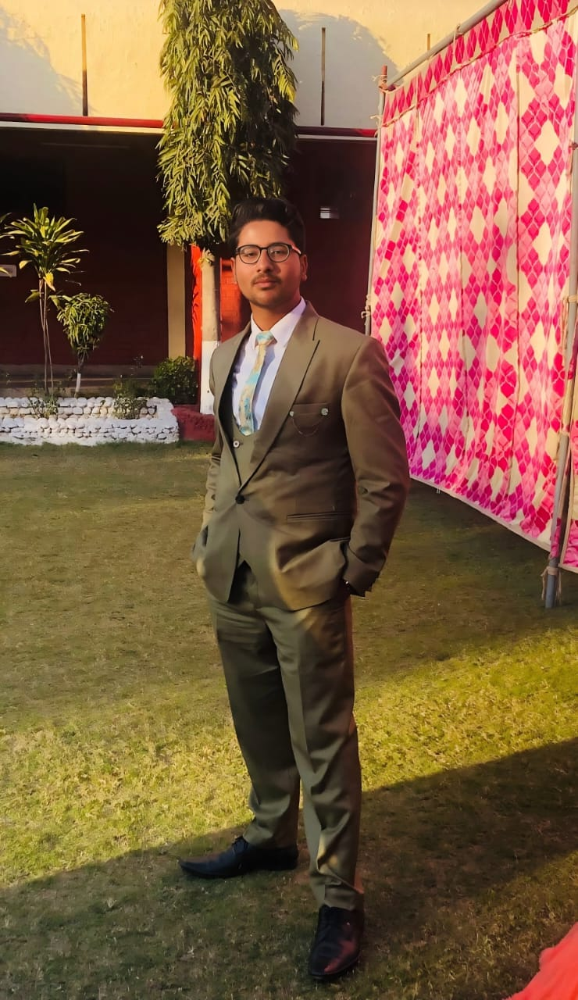

Full Stack Developer || SDE enthusisast
Aspiring software engineer with a strong foundation in full-stack web development, DSA, and a keen interest in AI/ML and data science. Passionate about problem-solving and developing innovative, data-driven solutions. Seeking opportunities to apply my skills in software development and emerging technologies while continuously learning and growing.
Bachelor Of Engineering- Computer Science and Engineering
Chandigarh University, Mohali (2023-Present)
(GPA-8.656)
Class 12th CBSE
Sant Nischal Singh Public School, Ladwa (2022-2023)
(Percentage-94.8%)
Class 10th CBSE
Sant Nischal Singh Public School, Ladwa (2020-2021)
(Percentage-84.6%)
Description: Engineered a scalable disaster management platform with AI-driven Sentiment Analysis for crisis assessment and Predictive Analysis for proactive response, improving real-time disaster response and mitigation efforts.
Technology Used: HTML, CSS, JavaScript, Node.js, Express.js, RESTAPIs, MongoDB, Python
Description: Developed a Chrome extension and website that flags harmful content, analyzes browsing patterns, calculates Digital Resilience Score (DRS), and provides AI-powered stress-reduction tips for early mental health detection.
Technology Used: HTML, CSS, JavaScript, OpenAI API, MongoDB, Chrome Extensions API, RESTful APIs, Express.js
Description: Developed a web platform that rewards eco-friendly actions (Reduce, Reuse, Recycle) with GreenBits, enables users to scan products for Sustainability and Transparency Scores, and connects them with verified sustainable sellers. Includes interactive dashboards for users, sellers, and admins.
Technology Used: HTML, CSS, JavaScript, Node.js, Express.js, MongoDB, EJS, Cloudinary, QR API, Multer, REST APIs
Description: Engineered a website that allows users to compare crane models, visualize load distribution using AR, and get personalized crane recommendations via an interactive chatbot.
Technology Used: HTML, CSS, JavaScript, Node.js, React, AR.js, WebGL, MongoDB, Express.js
Description: Built a Python-based text summarizer to extract key insights from a large dataset, improving content summarization accuracy and efficiency.
Technology Used: Python, NLP, Transformers, NLTK